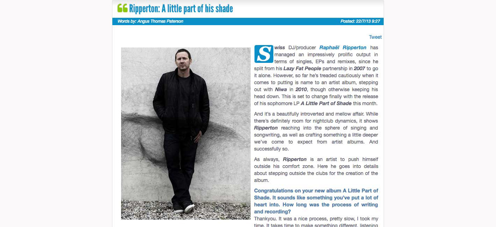

Ripperton: A Little Part of his Shade
{kind=link}

Swiss DJ/producer Raphaël Ripperton has managed an impressively prolific output in terms of singles, EPs and remixes, since he split from his Lazy Fat People partnership in 2007 to go it alone. However, so far he’s treaded cautiously when it comes to putting is name to an artist album, stepping out with Niwa in 2010, though otherwise keeping his head down. This is set to change finally with the release of his sophomore LP A Little Part of Shade this month. And it’s a beautifully introverted and mellow affair. While there’s definitely room for nightclub dynamics, it shows Ripperton reaching into the sphere of singing and songwriting, as well as crafting something a little deeper we’ve come to expect from artist albums. And successfully so.
As always, Ripperton is an artist to push himself outside his comfort zone. Here he goes into details about stepping outside the clubs for the creation of the album.
Congratulations on your new album A Little Part of Shade. It sounds like something you’ve put a lot of heart into. How long was the process of writing and recording? Thankyou. It was a nice process, pretty slow, I took my time. It takes time to make something different, listening to the songs again and again to be sure they’re good enough to be on the LP.The vibe for the album definitely seems very introspective, rather than a brazen nightclub affair. Were you drawing on your own personal experiences while writing? Making music is always draws on personal emotions. Its quite hard to explain where it comes from, it’s a kind of mixture between where you live, the life you have, where you spend your time. I have two kids who challenge different facets of my personality, and they show me the world with different eyes. It is really precious and true.
There has always been a warm, earthy feeling to your music, but you’ve definitely explored the raw, acoustic side of things on this album (while staying consistent with the house and techno side of your personality). What took you in that direction? You know, I’m DJing for 20 years now, I started producing in the late 90s, so I need to explore new horizons to keep my interest going. I do club things all the year as DJ, and with my remixes and singles, so I needed to work on something more intimate for the album. I tried to make it like a bridge between what I listen during the week, like blues, jazz, folk and ambient, and what I do on the weekend. It’s like a crossroad. I loved very much the writing, singing and exploring new ways of mixing with my analogic gears. I bought a Toft ATB16 a few years ago and it completely changed my way of producing. The album has almost no plugins, only real synths, instruments, machine drum reverbs and delay units. I finally found my perfect ‘warm’ setup.
This weekend I was DJing in Berlin, and a guy showed me a paper saying, “We miss the good old Ripperton”. I didn’t know what to think of it. I don’t think I have to follow what people expect from me. I go on my own path.
Tracks like No More Airplanes and Minor Interlude shows you’re definitely very interested in working with downbeat sounds outside of the club. Do you get enough of a chance to work outside the structure of house and techno in your music? I would love it if our scene was a bit more curious and versatile sometimes. I’d love to be asked to play an ambient set, or to perform live somewhere, to meet challenges. I’m really proud of those tracks, and I do a lot of these kind of songs, especially in the morning and they are staying on my computer.
It’s great because they’re not done for any one reason, I just express the moment that I feel with music without any other desires in the back of my head.
You've been vey prolific over the years in terms of EPs and singles, though you’ve been more considered when it comes to putting albums out. Is there any reason for this? It’s part of the game, don’t you think? You’re touching way more people with a full album. The media coverage is bigger too. If you’re doing it with your heart, people will feel it. I feel more free doing album too.
There is no stress doing it, just you and your music. Releasing a single is really different. One month after and it’s over, but with an album you can work on the big picture.
Tell us a bit about how you came to collaborate with the artists on the album. Hemlock Smith is a really amazing artist, I love his writing so much and the way he plays piano. He did all the lyrics and piano on the songs he appears. You should check his latest album Everything Has Changed. It’s really inspiring to play alongside an artist like him.
Van Hai is one of my oldest friends, we met in the 90s. He was already making music in punk bands, drawing graffiti and taking pictures. He’s a rebel sometimes like me, and he’s also one of the most talented writers I know.
Masaya is also one of my best friends, she’s an amazing DJ and I like the personal way that she sings. We’ve shared many unforgettable moments in music, and we’ve also travelled together to Chile where she comes from.
Germain Umdenstock is a close friend too, he’s such a brilliant guitarist, and every time we work together something special happens. We did A Little Part of Shade on the rooftop of the house while on holidays.
And finally, I met Andi Ernst AKA Randweg while doing a remix for Ellen Allien. He played all the clarinet on that record, and I was blown away by his sound and work, so we’ve collaborated on few things.